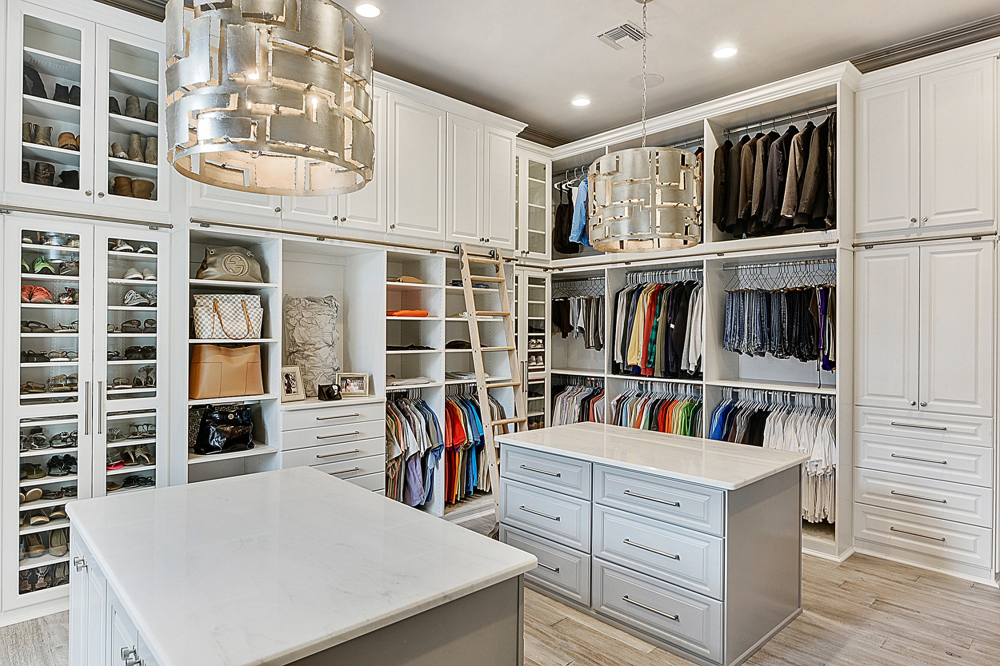

The aim of this analysis is to provide understanding about the brand, product name, category, size, and color
of a fashion item. This information will help facilitate informed decision-making in the future.
In this project, Pharmaceutical performance in Germany and Poland between 2017 to 2020 was analysed. Detailed
analysis of the sales performance, location/ cities, products, Distributor, Channel and sub-channel
was conducted.
In this project, analysis of the world universities ranking in relation to countries and population was conducted
between 2016 to 2024. Also, International Students, Staff, and Overall score ranging from Teaching, Research
environment, Research quality, Industry impact and International outlook was analysed.